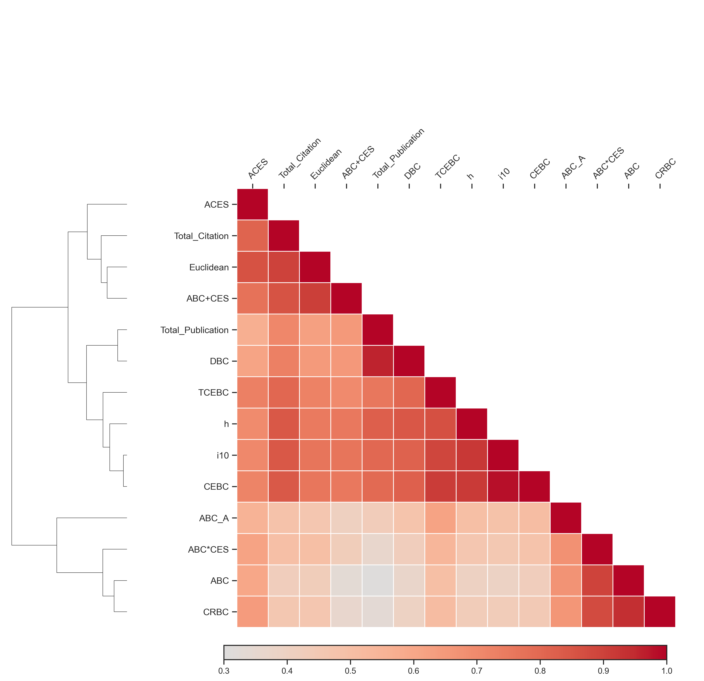
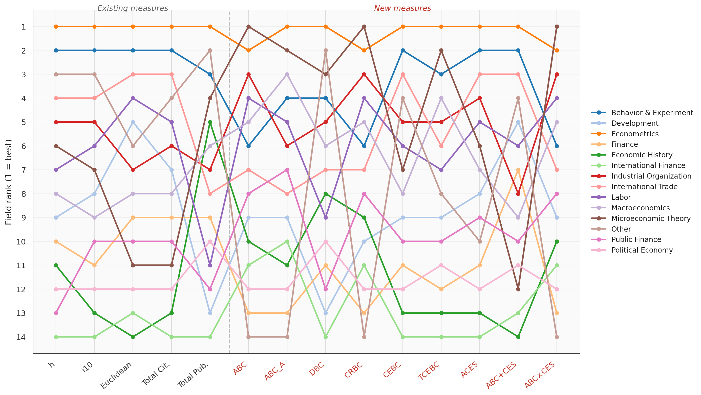
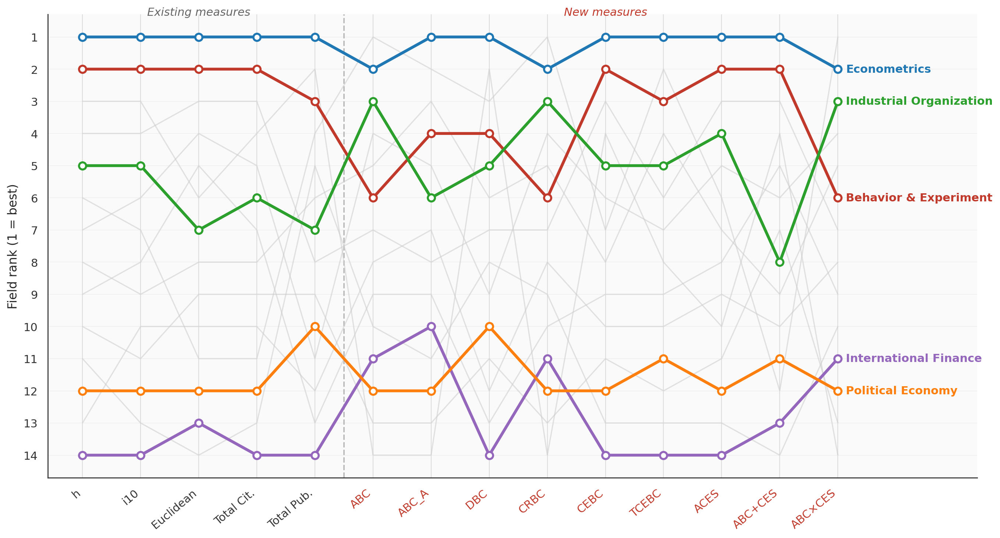
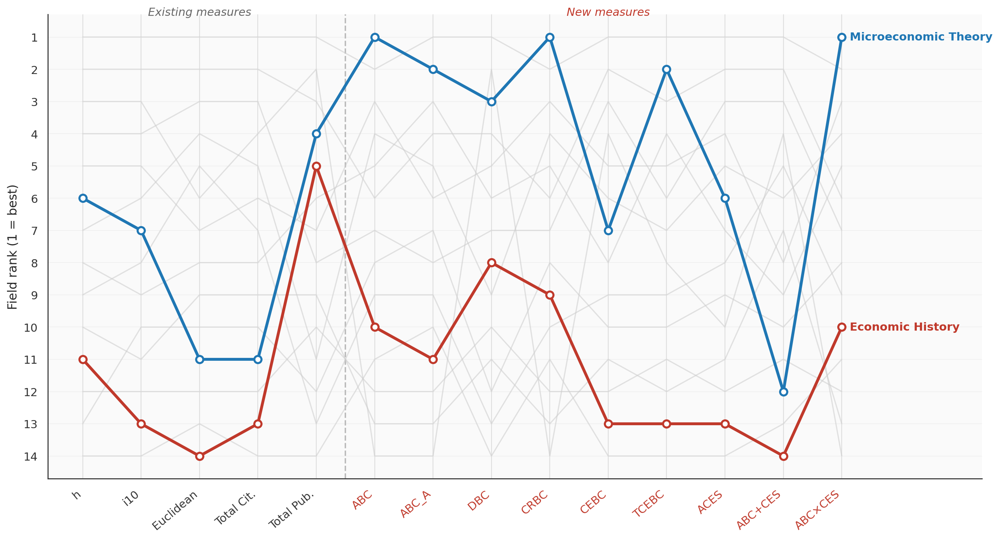
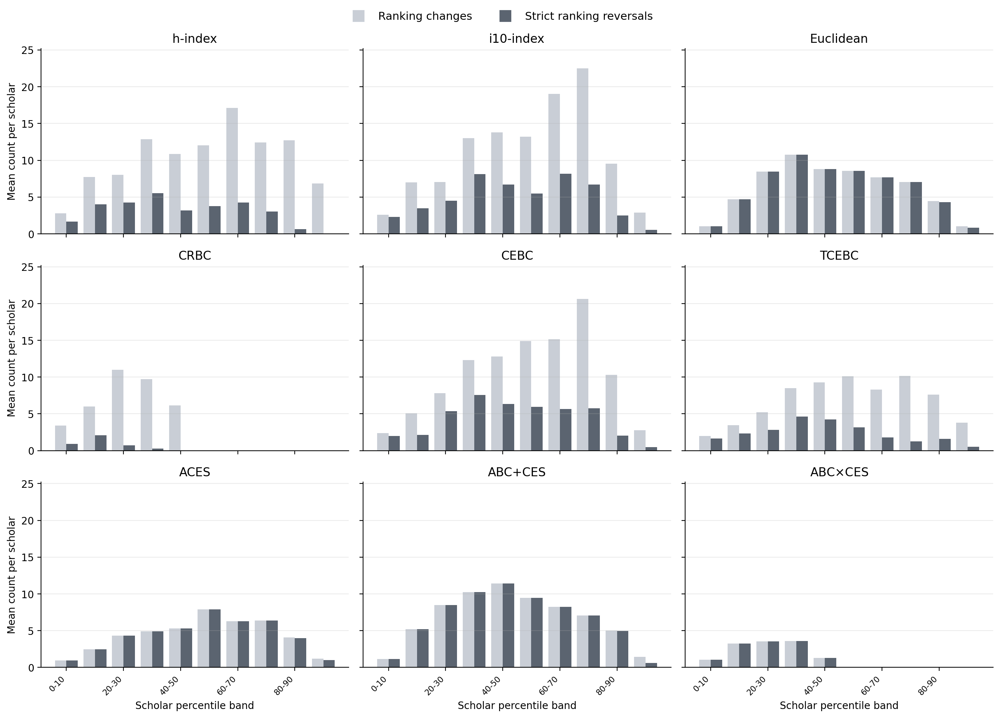

Ranking Scholars When Journals and Citations Matter
Abstract
Scholarly evaluation must reconcile two imperfect signals: the ex-ante judgment reflected in journal prestige and the ex-post impact measured by citations. We develop a unified axiomatic framework that integrates an ordinal journal list with cardinal citation counts and characterize two complementary families of scholar-ranking rules. First, journal-based Bean-Counting rules treat journal-list placement and citation counts as either substitutes or complements through citation thresholds. Second, citation-based asymmetric CES aggregators reward publication breadth within the journal list and citation depth outside the list. We apply these methods to 4,722 economists at QS Top 100 universities (2023–2026) and find sharply divergent rankings in the two families of rules across different fields, especially in microeconomic theory and economic history. We also show that journal-based rules are highly robust to field-specific citation rescaling, whereas citation-based rules generate significant ranking instability.
Why measure scholarly impact using both journal prestige and citations?
Journal placement provides an ex-ante signal of research quality, whereas citations capture ex-post scholarly impact. Because each contains information the other omits, and disciplines place different weights on them, we integrate both within a unified framework comprising two complementary families of scholar-ranking rules and an interactive tool that shows how rankings change under alternative evaluative priorities.
Two complementary families of scholar-ranking rules
Our framework turns this tension into a ranking-design problem by offering two complementary approaches:
- Bean-Counting — starts from journal placement and uses citation thresholds to extend or restrict credit across publications.
- CES — starts from citation impact and uses journal-dependent elasticities to reward publication breadth inside recognized journals and citation depth outside them.
Sample
Scholars from the economics departments of universities ranked in the QS Top 100 across from 2023 to 2026.
Rules
Bibliometric baselines (h-index, i10, Euclidean, citation counts) alongside the Bean-Counting and CES families.
Classification
Filter by field — explore in the Ranking page.
Navigate the project
What the rankings reveal
We apply both families to 4,722 economists at QS Top 100 universities (2023–2026) through three exercises: First, we compare the scholar rankings generated by all rules in both families and benchmark them against conventional metrics. Second, we examine how field-level rankings vary across rules. Third, we assess the sensitivity of each rule to field-specific citation rescaling. Five figures summarize the main findings.
How the rules relate to one another
A clustered heatmap of Kendall rank correlations across all rules and benchmarks. Journal-based and citation-based metrics capture distinct dimensions — the h- and i10-indices correlate strongly with each other yet diverge sharply from ABC. The Bean-Counting family splits into two clusters (strict ABC/CRBC vs. broader DBC/CEBC/TCEBC), and the CES family stands apart from traditional benchmarks.

Field rankings across every rule
Average field rankings under all 14 fields, traced across each rule. Restricting to single-field scholars (3,416 scholars, 72.3% of the sample), the lines show which fields hold their position and which swing with the choice of rule.

The top-ranked and bottom-ranked fields
The three top-ranked fields — econometrics, behavior & experiment, and industrial organization — stay near the top across rules, with econometrics almost always leading. At the other end, international finance and political economy remain consistently near the bottom.

The least stable fields
Microeconomic theory and economic history swing the most, for opposite reasons. Theorists rank first under journal-based rules but collapse to ranks 11–12 once citations dominate; economic historians rank highly under publication-volume rules but fall to the bottom under citation-weighted ones.

Robustness to citation rescaling
Using econometrics (315 single-field scholars) as an illustration, we examine within-field ranking instability after field-specific citation rescaling. CRBC and ABC×CES are the most robust, leaving roughly 56% and 60% of scholars entirely unaffected, whereas citation-driven rules (h, i10, and CEBC) shift far more, with instability concentrated among mid-ranked scholars.
